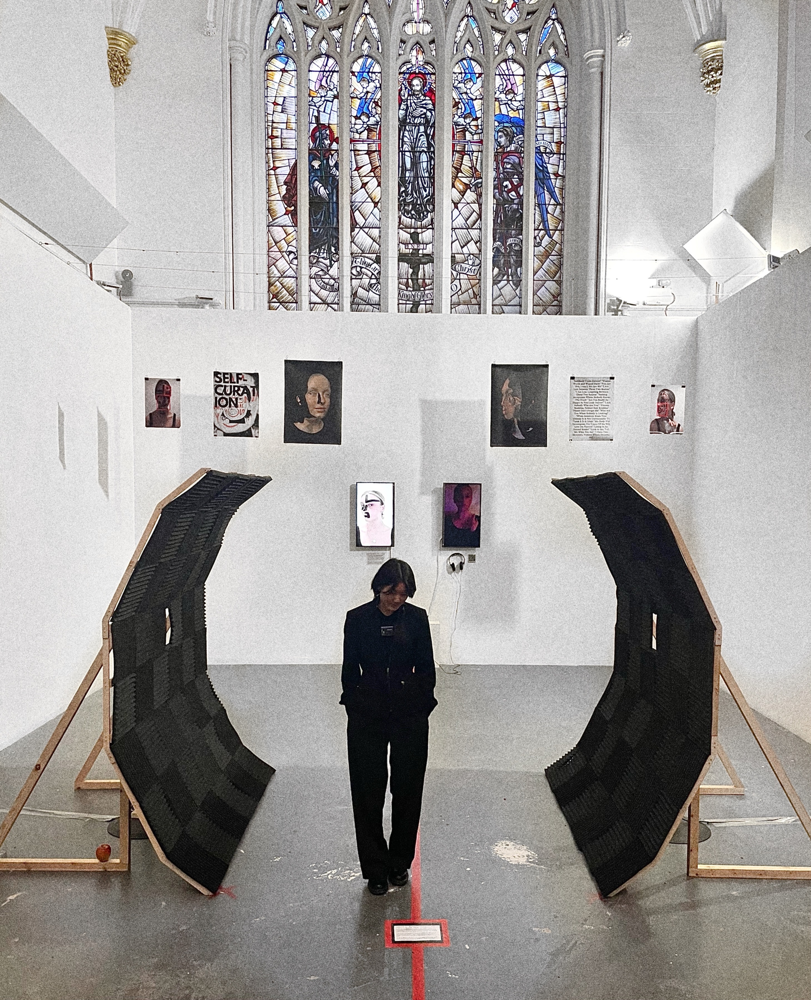

VenAur was born in South Korea and grew up in Norway. She engages into autoethnographic exploration, weaving personal themes into her artistic practice to communicate meaningful messages. She seeks to evoke emotional response beyond mere comprehension or conversation. Transforming vulnerabilities into sources of empowerment, she uses art as a means of reclaiming agency over her experiences.
Focusing on sound-based installations combined with sculpture, VenAur crafts immersive auditory sculptures. Her sonic creations invite the audience to not only listen but also to feel, recognizing the profound impact sound can have.
VenAur graduated from the BSc Digital Arts Computing at Goldsmiths, University of London in 2023. Currently, she is pursuing her masters in Sound Arts at University of the Arts, London.

VenAur graduated from the BSc Digital Arts Computing at Goldsmiths, University of London in 2023. Currently, she is pursuing her masters in Sound Arts at University of the Arts, London.
Venaur@yahoo.com